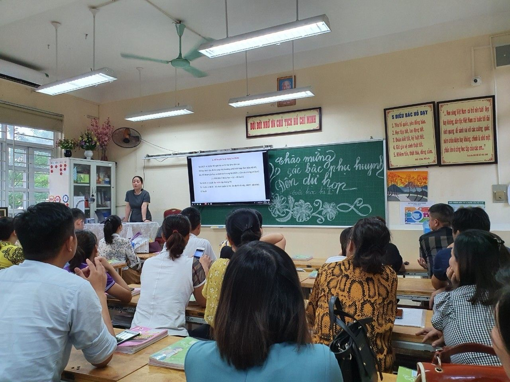

BUỔI HỌP PHỤ HUYNH CUỐI NĂM ĐẦY CẢM XÚC
Năm học 2019- 2020, có thể coi là một năm học khó khăn đối với giáo viên, học sinh cả nước nói chung và giáo viên, học sinh trường Tiểu học Yên Sở nói riêng bởi các em học sinh phải nghỉ học kéo dài do ảnh hưởng của dịch Covid 19. Không lùi bước trước những khó khăn, thử thách, các thầy cô giáo trường Tiểu học Yên Sở đã không ngừng nỗ lực, phấn đấu để hướng dẫn, động viên và tìm các phương pháp mới để truyền đạt kiến thức đến với các em học sinh.
Và trong cuộc họp đại diện cha mẹ học sinh cuối năm diễn ra vào ngày 7 tháng 7 năm 2020, cô giáo Nguyễn Thị Hồng – Bí thư chi bộ, Hiệu trưởng nhà trường đã báo cáo những thành tích của tập thể và cá nhân nhà trường. Với thành tích: 5 học sinh đạt giải cấp Thành phố, 67 học sinh đạt giải cấp Quận và 1705/2085 học sinh được khen thưởng cấp trường cùng nhiều thành tích của các đồng chí cán bộ, giáo viên,… là những thành tích rất đáng tự hào của các em học sinh và tập thể cán bộ, giáo viên đã đạt được trong năm học vừa qua.
Tuy cuộc họp diễn ra vào những ngày tháng 7 vô cùng oi ả, nhưng sự phấn khởi, vui mừng của các bậc phụ huynh đã xua tan đi cái nóng bức của mùa hè. Tại cuộc họp phụ huynh, nhà trường được đón nhận rất nhiều tình cảm của các bậc phụ huynh. Đặc biệt, ông nội của em Phạm Hoàng Hải – học sinh lớp 5A3 đã sáng tác một bài thơ gửi tặng tập thể cán bộ, giáo viên trường Tiểu học Yên Sở:
“ Tiểu học Yên Sở năm nay
Quyết tâm phấn đấu đổi thay rất nhiều
Giáo dục đi đúng mục tiêu
Học sinh chăm học đạt nhiều điểm cao
Phụ huynh chung sức ngay vào
Giáo dục toàn diện trò nào khó quên
Chất lượng thật chắc vững bền
Tiểu học Yên Sở cấp trên yên lòng”.

Buổi họp phụ huynh cuối năm tại lớp 3A1
.jpg)
Đại diện cha mẹ học sinh gửi lời cảm ơn và tặng hoa cô giáo chủ nhiệm
Có thể nói, sự tin tưởng gửi gắm con em mình, sự hài lòng của các bậc phụ huynh là món quà tinh thần vô cùng ý nghĩa và quý báu mà nhà trường luôn trân trọng và mong muốn được đón nhận. Đó cũng chính là động lực để tiếp thêm sức mạnh, lòng nhiệt huyết, yêu nghề của tập thể cán bộ, giáo viên nhà trường. Để có được kết quả đó không thể không kể đến công sức của các bậc phụ huynh đã luôn sẻ chia, sát cánh trong mọi hoạt động của nhà trường. Nhà trường xin trân trọng cảm ơn những tình cảm của các bậc phụ huynh.
Trong những năm học tới, trường Tiểu học Yên Sở sẽ tiếp tục phấn đấu để xây dựng một môi trường học tập thân thiện, học sinh tích cực và đạt nhiều thành tích để không phụ lòng mong mỏi, sự tin yêu của các bậc phụ huynh.